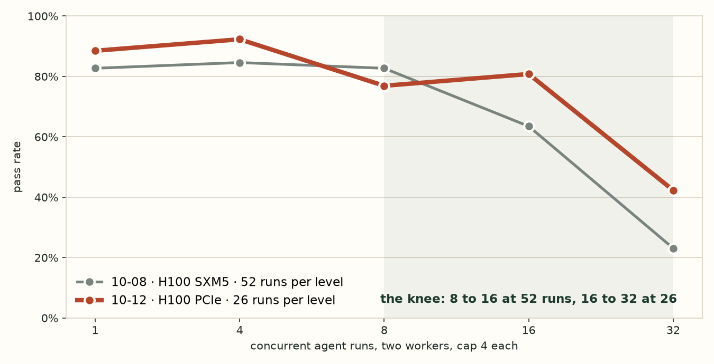
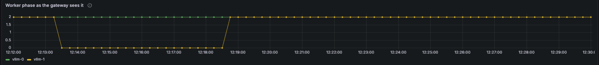
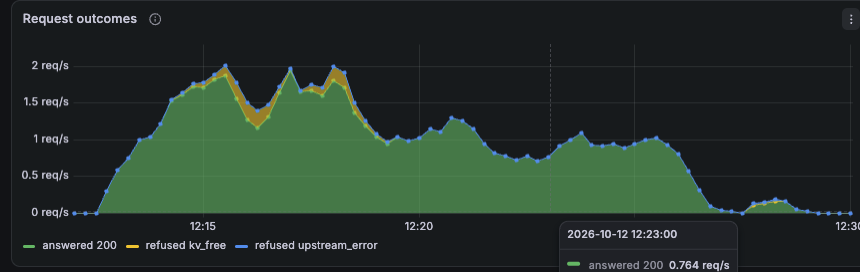

Ariadne on one H100. Capacity, the knee, a worker dying, one long run.
A read-only root-cause agent for Kubernetes, served by two vLLM workers on one H100, behind a gateway that decides who waits.
Four stories, each with its chart and its log line. The thread through them: KV ran out first, and the overload moved out of the engine into the gateway's queue.
Measured on the live cluster
51k
KV tokens per half, measured. The paper number was 78k, likely the hybrid model's fixed costs.
4
runs in flight per worker. One number drives admission, scaling and the hop.
5 min 26 s
for a deleted worker to come back under load. Two runs lost a step, none lost a diagnosis.
Qwen3.8-27B FP8 · vLLM 0.29 · two HAMi halves of one H100 PCIe · Go gateway · KEDA · Mooncake KV hop. Leave-behind deck has the full findings.
1
1 · The workload the engine sees
Every call is the same 3.8k prefix plus the run's own history, and the history grows every step.
Tier, 26 tasks
priority
unique tokens
steps
peak prompt
easy
interactive
2,459
6 to 7
7.1k
multi-hop
interactive
3,570
8
9.0k
red herring
interactive
4,768
8
8.7k
right-sizing
batch
5,200
3 to 4
6.0k
audits
batch
7.7k to 11.2k
23 to 25
14.7k to 15.8k
The token ladder
3,787
shared prefix: rules and tool schemas
12,000
planning length, sets the cap of 4
15,831
largest prompt seen
23,000
the agent stops itself
24,576
vLLM max-model-len, a 400 past it
Each step re-sends everything so far. 88% of prompt tokens come from the prefix cache. In the queue, interactive goes before batch, then arrival order, each with a deadline: 10 s interactive, 30 s batch.
Unique tokens: medians per tier, D-29. Steps and peak prompt: medians from the 10-12 concurrency 1 and 4 runs. Cached share F8 to F10, F47.
2
serving/fit.py, deploy/models/qwen3.8-27b-fp8.json, deploy/serving.json. Measured pool from vLLM's startup log. Planning length 12,000; largest prompt seen 15,821; agent stops at 23,000; max-model-len 24,576.
3
1 · Capacity, calculated first
The calculator said 4.5 runs fit a half. vLLM measured a pool 34% smaller, and the cap is 4.
Qwen3.8-27B FP8 on one HAMi half, 39 GiB
GiB
budget, 90% of the slice
35.1
weights
28.75
activation peak at 8,192 batched tokens
0.84
CUDA context
0.75
KV pool left
4.76
KV per token: 16 attention layers × 4 KV heads × 256 × K and V × 2 bytes = 64 KiB. The 48 linear layers keep a fixed 147 MiB per sequence instead.
paper 77,926 tokens → measured 51,092
The 34% gap is likely the hybrid model's fixed costs the calculator does not charge: the recurrent state, a vision encoder and an MTP head in the checkpoint. Within 1% on plain-attention models.
One run: 3,787-token shared prefix + 2.5k to 11k unique tokens over 5 to 25 steps, each step re-sending the whole history. Planning length 12,000.
The gate runs before every deploy and exits non-zero if the model does not fit. It emits three numbers the gateway reads at start: GW_MAX_INFLIGHT=4, GW_HOP_KV_BYTES_PER_TOKEN=65536, GW_HOP_PREFILL_TOKENS_PER_S=2721. They drive admission, the KEDA rule and the hop cost.
2 · The knee: where adding load stops adding throughput
Pass rate holds to 16 runs and falls at 32. KV sets the knee, the queue deadline ends the runs.
Concurrent
Pass rate
Runs refused
1
88.5%
0
4
92.3%
0
8
76.9%
0
16
80.8%
2 on 503
32
42.3%
12 on 503
The gateway log, 1,232 requests, four rows
time
run
st
pod
outcome
queued
10:55:36
dx-init-wait
1
-
503 timeout_queue
refused at the gate
10:58:39
dx-oom
1
-
503 kv_free
refused at the gate
10:56:39
dx-audit-1
2
vllm-1
200 hit
11.1 s
10:58:47
dx-crashloop
3
vllm-1
200 broken_shed
0.3 s

26 runs per level on 10-12, 52 on 10-08. With 52 the knee sits at 8 to 16, because 32 are truly in flight. Same cap, same KV: each half holds about two full contexts.
The gate held at 4 per worker, KV rode the 20% line, and the cost was waiting, not slower decode.
In flight and queued per pod
In flight flattens at 4 on each worker at every level. Everything above the cap sits in the gateway queue with a deadline, not inside vLLM.
KV free ratio, gateway view
New runs are refused below 20% free. Runs already resident may continue to 5%. Free hugs the line because the pool is full of resident runs, which is the cap doing its job.
p95 by stage
Queue p95 climbs to 10 s. Local, the engine's time, stays near 20 s throughout. Inter-token latency moved from 45 to 95 ms. The engine was never the slow hop.
Preemptions stayed at zero through 16 and appeared only at 32. Admission protected the engine up to the knee and was overrun past it. GPU utilisation read 100% from the first run to the last, so it cannot be the scaling signal. Power draw tracks load.
Gateway and vLLM dashboards, 11:50 to 12:05 on 10-12, levels 8, 16 and 32. The stacked "Request outcomes" panel shows the same three humps with refusals on top.
5
2 · Why this placement policy · the A/B
Prefix-then-load against least-loaded: same answers, 10% less prefill, 8 to 11% faster steps.
Same node, same golden set, concurrency 4
prefix_then_load
least_loaded
pass rate
86.5%
88.5%
continuing steps back on their run's worker
94%
77%
uncached prompt tokens prefilled
416,445
459,909
cached share of prompt
87.8%
85.6%
step latency p50
2.86 s
3.10 s
step latency p95, after the first step
25.3 s
28.1 s
Why the gap is small here
At concurrency 4 load is low and even, so least-loaded lands on the right worker 77% of the time by luck. Both workers hold the 3.9k shared prefix from warm-up, so only each run's own history is at stake.
The 2-point pass difference is inside the 95% interval on 26 tasks. The policy is the only thing that changed between arms.
F29, 10-08, metrics/golden-gw-38-* and the least_loaded arm; 1,204 and 388 continuing steps. power-of-two was the third arm and sat between them.
6
3 · A worker dies under load
vllm-1 was deleted 30 s into a 16-minute load and was back in 5 min 26 s. Admission carried the gap.


No scrape for 10 s marks a worker down, and a down worker gets no placements. The two steps already on it got a 502. New runs then got a 503 kv_free while vllm-0 alone held four resident runs under the 20% line.
time
run
st
pod
status · why here
12:13:33
dx-dns-misconfig
11
vllm-1
502 after 38.5 s
12:13:33
dx-healthy
3
vllm-1
502 after 31.8 s
12:13:35
dx-healthy
3
vllm-0
200 broken_gone
12:13:36
dx-dns-misconfig
11
vllm-0
200 broken_gone
The two steps caught on the dead worker were retried on the survivor two seconds later with the shared prefix still cached. The StatefulSet recreated vllm-1 on its own. KEDA scales replicas 1 to 2 on two gateway signals: demand, in flight plus queued over the cap of 4, and any capacity shed in the last minute. Both fired here, but 2 is the maximum. A larger card, or more cards, is the next scale-out step.
What it cost
deleted → gateway marks down
11 s
deleted → Ready again
5 min 26 s
steps on the dead worker, 502, retried on vllm-0
2
503 kv_free refusals across 19 runs, 4 retries each
32
runs that got in on a retry
18
runs lost, retries exhausted on 503
1
pass rate, baseline 86.5%
83.7%
104 runs at concurrency 4, 12:12 to 12:28 on 10-12. metrics/events-recover-probes-20261012-121231.jsonl, metrics/gateway-log-recover-20261012-130245.jsonl. On 10-08 the same probe took 5 min 37 s.
7
3 · What broke after recovery
The first KV hop out of the restarted worker hung for 114 seconds on a stale engine id.
step
pod
sticky
hop
code
upstream
cached
15
vllm-1
hit
-
200
1.2 s
10,192
16
vllm-0
broken_load
hopped
502
114.1 s
0
16
vllm-0
hit
-
200
1.1 s
3,920
17
vllm-0
hit
-
200
0.6 s
10,192
dx-audit-2 at 12:27:31. The source hold took 0.9 s and reported the blocks held. The destination then waited for KV that never came until the 115 s upstream timeout. The agent retried, recomputed the 10k-token history from the shared prefix, and finished the diagnosis.
The only spike in 16 minutes, and it came after recovery, not during the outage.
What we observed
The gateway keeps each worker's Mooncake engine id from the first hop and only clears it if a hold call fails. vllm-1 came back with a new id. The hold on it still succeeded, so vllm-0 tried to pull from the old id and waited. The hop's 10 s timeout only covers the hold, so nothing cut the wait short of the 115 s upstream limit.
The fix, and why the dashboards missed it
Clear the cached id whenever a worker leaves Ready, and bound the receive with its own deadline. On the dashboards, "KV hops by result" counted this as a successful hop because the hold succeeded, and "Upstream errors" only plots transport errors. Only the request log showed it.
It also leaked. vllm-1 freed its held blocks after 480 s. vllm-0 never freed the blocks it had set aside for the receive, and 22% of its KV stayed in use from 12:27 onward with nothing running.
gateway/internal/hop/mooncake.go, hopper.go; DefaultUpstreamTimeout 115 s. vLLM logs: producer "timed out after 480 seconds", consumer "transfer failed: Resource temporarily unavailable". Mooncake TCP measured at 1.6 GB/s idle, 0.1 GB/s under the 32-run load.
8
4 · One long run on a quiet cluster
A 23-step audit fills a third of its worker's KV, and our stickiness rule reads that as load and moves it.
step
pod
sticky
hop
hop ms
prompt
cached
20
vllm-0
hit
-
0
13,583
12,544
21
vllm-1
broken_load
hopped
409
14,545
14,544
22
vllm-0
broken_load
hopped
1,563
14,645
14,644
23
vllm-0
hit
-
0
14,745
14,112
The first run. The hop works: 14,544 of 14,545 tokens were already on the destination. Receiving about 1 GB over Mooncake TCP cost about 1.1 s against 5.3 s to recompute. Moving at all was the wrong call.
Why
A worker's load is its in-flight share plus its KV in use. The run's own 14.5k tokens are 0.35 of the 51k pool, so the worker holding it looks 0.35 busier than an empty one. The rule allows a gap of 0.25, so the run is moved. On the new worker the same thing happens, and it moves back.
Fix
When comparing, leave the run's own history out of its worker's KV. The run cannot be a reason to move the run. It only shows above about 12k tokens of history with the other worker near empty, so audits on a quiet cluster. The 10-08 A/B never hit it: runs were short and both workers were busy.
The same run again, as the control
dx-audit-3, concurrency 1
run 1
run 2
steps
23
25
largest prompt, tokens
14,745
15,831
idle worker's KV in use
3%
22%
run's own KV share at peak
0.35
0.33
moves, KV hops
2, 2
0, 0
Same rule, opposite outcome. Whether a long run keeps its worker is decided by how empty the other worker happens to be, not by anything about the run.
vLLM's own counter on vllm-0 shows 89,784 tokens received through Mooncake on 10-12, the transfer evidence the 10-08 findings lacked.
gateway/internal/decide/pick.go, DefaultStickSlack 0.25; metrics/gateway-log-audit3-20261011-212533.jsonl. Not in the submitted findings. The two vLLM prefill panels disagree with this log at low sample counts; the log is the ground truth.
9
The ledger · what we found and what broke
Eleven findings, four from the final session. Six fixed, five named with a next step.
Finding
Where
Status
The paper KV pool was 34% too optimistic for the hybrid model
F5
fixed: the measured pool drives the cap
The in-flight cap was sized for the A100; vLLM preempted and thrashed
F26, F36
fixed: cap 4 from the pool, preemptions down 95%
Past the knee the queue deadline ends runs, not KV
F34, F36
open: cap 6 to 8, or a longer deadline
tool_choice required collapsed decoding into whitespace on vLLM 0.29
D-38
fixed: auto, Qwen sampling
A dying worker ended runs with a 502; client aborts were counted as worker errors
F44, F28
fixed: the agent retries a 502, aborts are client_gone
GPU utilisation reads 100% from one run to a full sweep; power is the load signal
F46
fixed on the dashboards, never a scaling signal
Prefix-then-load beats least-loaded by 10% prefill and 8 to 11% step time, same answers
F29
kept as the shipped policy
A long run breaks its own stickiness on a quiet cluster and ping-pongs
10-12
open: exclude the run's own history from the KV share
A hop from a restarted worker hangs 114 s on a stale engine id and leaks 22% of the destination's KV
10-12
open: forget the id on restart, receive deadline, consumer cleanup
Mooncake TCP moves KV at 1.6 GB/s idle and 0.1 GB/s under load; the policy assumes 2
10-12
open: measured constants, recompute when loaded
Three vLLM percentile panels are wrong when only a few requests are in the window. One showed 8 s of prefill for a step that was really 14 s of decode. The request log is the ground truth
10-12
open: fix the queries, keep the log
design/findings.md F1 to F47 and design/decisions.md D-1 to D-51 for the rest. The 10-12 four come from metrics/gateway-log-*-20261012-*.jsonl and the vLLM pod logs.